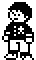
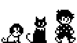

MY SKILLS
- digital illustration
- storyboarding
- character + concept design

GAME PROJECTS
- Space Rat (2018)
- Play as a space rat chasing a stolen lunchbox across the galaxy!
- Browser-based HTML5 game made with Adam Le Doux's Bitsy engine over the summer.
- Moonlit Lobby Demo (2017)
- Tell stories as a cat telling in a jazzy old-timey world filled with curious characters!
- Downloadable game demo made in 1 month for the Dream Diary Jam in RPG Maker 2003.
- Edamame Days (2018)
- Play as Eda, a bean dryad in a world of green and magic beans. Life's tough when you're transgender and depressed.
- Semi-autobigraphical game being developed in RPG Maker 2003.